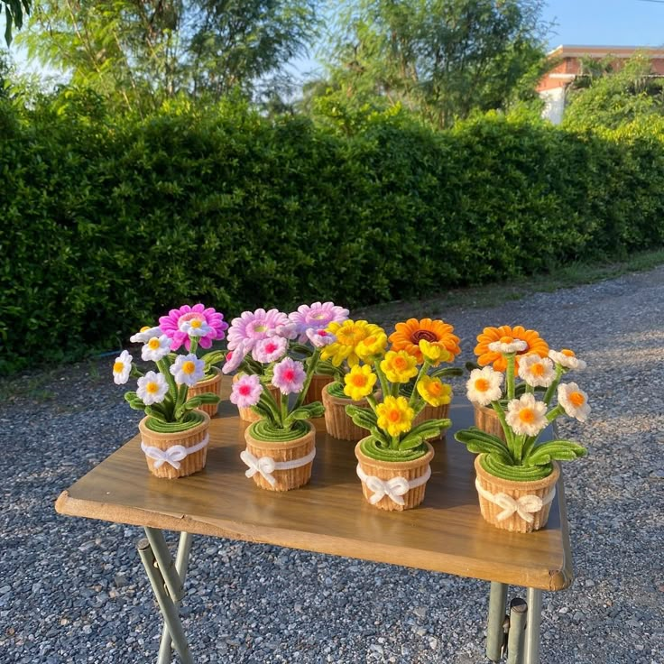

Uma História que Floresceu
A Florentia começou como um pequeno sonho e, com muito carinho, se tornou o que é hoje: uma floricultura que faz parte da vida de muitas pessoas. Cada etapa da nossa trajetória representa um momento especial de crescimento, aprendizado e conexão com quem confia no nosso trabalho.

| Ano | Marco | Descrição |
|---|---|---|
| 2018 | O início | A Florentia nasceu como um pequeno projeto, com o objetivo de levar mais beleza e significado para o dia a dia das pessoas. |
| 2019 | Primeiros clientes | Começamos a atender nossos primeiros clientes, sempre com foco na qualidade e no atendimento personalizado. |
| 2021 | Expansão da loja | Ampliamos nosso espaço e passamos a oferecer mais opções de flores, arranjos e presentes. |
| 2023 | Loja online | Levamos a Florentia para o mundo digital, facilitando o acesso às nossas flores e permitindo que mais pessoas façam parte da nossa história. |
| 2025 | Hoje | Seguimos crescendo, sempre com o mesmo propósito: conectar pessoas a sentimentos através das flores. |